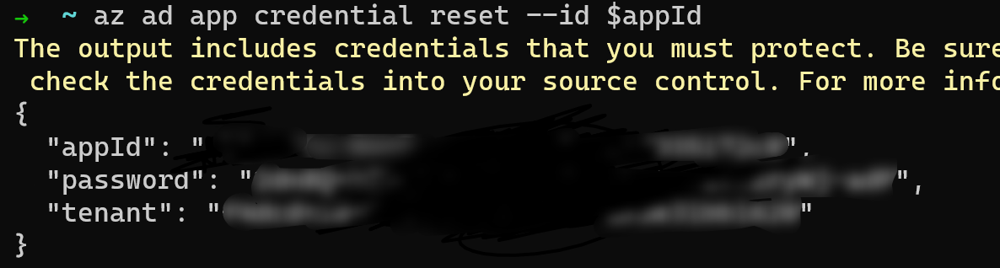
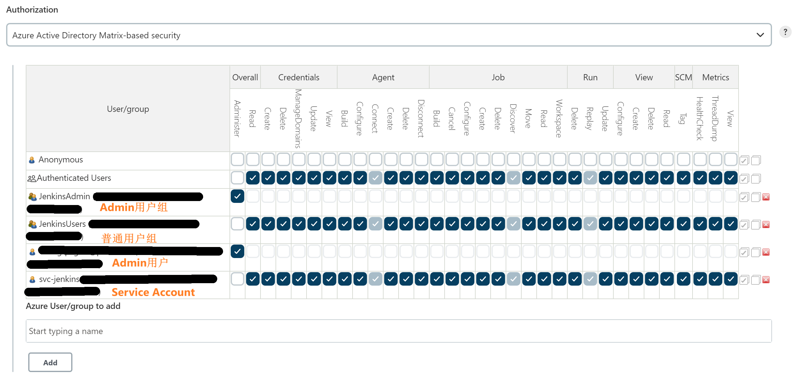

在《利用Azure AD实现Homelab环境中应用的统一认证和授权》中，我介绍了当前我是如何实现统一认证和授权。这一篇博客中，我将介绍Jenkins如何和Azure AD集成。
Jenkins等这一类的应用，我会选在部署在k8s集群上，主要原因如下：
- 减少维护成本。比如升级Jenkins，我只需要修改helm，然后部署就行。
- Agent可以在k8s集群中自动伸缩，不需要我再次配置。
部署
为了保持环境干净，我会重新创建一个 namespace，并把Jenkins部署到该namespace之中。
使用如下命令创建 namespace，
1 | kubectl create ns jenkins-lab |
注意： 我使用了命令式命令（Imperative commands）创建 namespace, 这种方式不推荐在生产环境使用。具体参考Kubernetes Object Management.
推荐使用helm部署Jenkins，Jenkins官方也提供了chart。
1 | helm repo add jenkins https://charts.jenkins.io |
需要提供自定义一下values文件，这次部署过程中，我会使用如下配置：
1 | controller: |
需要注意的是，因为AAD App的reply url需要安全的通信方式，此处即Https。我配置了一个带用tls的ingress，之后会写一篇博客介绍如何自动申请SSL证书。
如果你需要更多的自定义配置，可以参考Jenkins Chart默认的values.yaml。
到这里Jenkins部署完成，下一步注册AAD应用。
注册Azure AD应用
注册Azure AD应用可以使用如下方式：
- 通过Azure AD Portal或者Azure Portal注册。
- 通过Azure CLI注册。
通过web页面注册，交互比较容易，但是过程很难自动化，也没啥意思。因此我将采用CLI的方式，之后可以将其自动化。
注册一个名为 jenkins-lab的AAD应用
1 | appName="jenkins-lab" |
此处有坑： 查询Azure CLI的官网和使用azure --help的结果可能有较大区别。建议直接使用 --help获取帮助信息。
因为要使用的Group进行权限管理，因此需要将groupMembershipClaims改为SecurityGroup。
1 | appId=$(az ad app list --display-name $appName | jq -r -c ".[0].appId") |
接下来，需要AAD应用授予User.Read.All, Group.Read.All, People.Read.All应用权限，使用如下命令：
1 | microsoftGraphAppId=$(az ad sp list --query "[?appDisplayName=='Microsoft Graph'].appId" --all | jq -r -c ".[]") |
Jenkins集成AAD
第一步： 登录Jenkins，默认用户名为admin，密码使用下面的命令查询：
1 | kubectl exec --namespace jenkins-lab -it svc/jenkins -c jenkins -- /bin/cat /run/secrets/chart-admin-password && echo |
第二步： 进入Manage Jenkins -> Security -> Configure Global Security
第三步： 执行下面的命令，获取Azure AD应用的密钥。
1 | az ad app credential reset --id $appId |
得到如下结果，
该密钥有效时长为1年
第四步： 配置Security Realm 并保存
Client ID：使用第三步返回的结果中的appId
Client Secret：使用第三步返回的结果中的password
Tenant: 使用第三步返回的结果中的tenant
第五步： 保存之后，注销登录
第六步： 重新进入Jenkins，会自动跳转到Microsoft登录页面。
第七步： 配置权限，并保存
在Start typing a name处，输入用户名或者组名，然后添加，授予合适的权限。
总结
在集成的过程中仍然有大量的手动工作，之后计划使用JCasC改进，为什么现在不用？因为之前尝试过，没有成功。